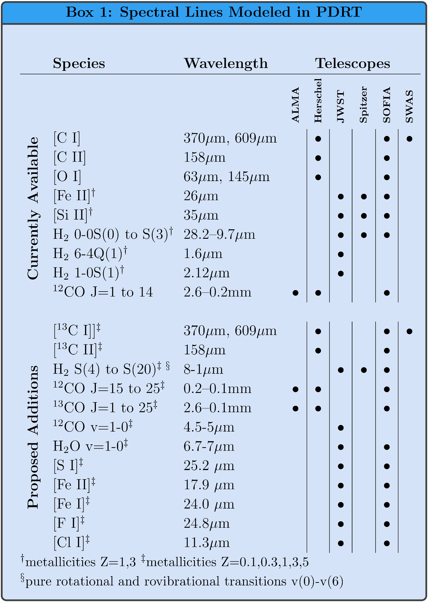

The Wolfire/Kaufman models are primarily based on the work of Tielens & Hollenbach 1985; Wolfire et al. 1990; Hollenbach et al. 1991; Kaufman et al. 1999; and Kaufman et al. 2006. For a given set of gas phase elemental abundances and grain properties, each model is described by a constant H nucleus number density, \(n\), or constant thermal pressure, \(P_{th}\), and incident far-ultraviolet intensity \(G_0\). The models solve for the chemical balance, thermal equilibrium, and radiation transfer through a PDR layer. Our treatment updates previous results to use recent values of atomic and molecular data, current chemical rate coefficients, and grain photolectric heating rates. There are two versions of the "WK" model data sets ("ModelSets") available: 2006 and 2020. We recommend you use the 2020 version as they contain updated physics and chemistry. There are a number model data sets ("ModelSets") currently available in PDR Toolbox. The Wolfire/Kaufman constant density ModelSets present spectral line and continuum intensity ratios as a function of \(G_0\) and \(n\). In a future release, we will add constant thermal pressure ModelSets which present the intensity ratios as a function of \(G_0\) and thermal pressure \(P_{th}\). The PDR Toolbox can also support importing the external models of your choice, provided they are stored in the right format.
The ratio plots are used to determine the beam averaged values of \(G_0\) and \(n\). Note that \(n\) is the H nucleus density (cm-3). so that the maximum abundance of H2, for example, is \(n(H_2)= 0.5~n\). The values of \(G_0\) and \(n\) are obtained by fitting the observations to the model space. Required are at least two observations of line intensity ratios or one line intensity ratio and the ratio of the [C II] + [O I] intensity to the infrared dust continuum emission \(I_{FIR}\). More than two observed ratios will of course do a better job of determining unique \(G_0\) and \(n\).
It is important to correct for the different beam area filling factors for various species. For example, diffuse [C II] emission may fill the observing beam whereas [O I] emission may arise from a smaller, high density and high temperature region. In such a case, it would not be appropriate to take the ratio of observed fluxes for fitting. Instead the ratio of intensities should be used or the ratio of fluxes corrected for the separate emitting solid angles. Note also that the ([C II] + [O I])/\(I_{FIR}\) model ratios are for a single face-on PDR. For the case of active regions of galaxies, or where there may be many clouds contained within the beam, the FIR continuum is observed from both the near and far side of the cloud. Thus, the observed ratio should be multiplied by a factor 2 (or equivalently the model values should be divided by 2).
In pdrtpy, these are referred to as the wk2020 ModelSet.
These model data start with the 2006 PDR model code and add improved physics and chemistry. Critical updates include those discussed in Neufeld & Wolfire 2016, plus photo rates from Heays et al. 2017, oxygen chemistry rates from Kovalenko et al. 2018 and Tran et al. 2018, and carbon chemistry rates from Dagdigian 2019. We have also implemented new collisional excitation rates for [O I] from Lique et al. 2018 (and Lique private communication) and have included 13C chemistry along with the emitted line intensities for [13C II] and 13CO. In Box 1, we show the currently available spectral lines and those we expect to deploy later in the project. In addition, we will compute ModelSets for a full range of metallicity \(Z\).

Current and future spectral line and metallicity coverage of the PDR Toolbox.
In pdrtpy, these are referred to as the smc ModelSet.
In pdrtpy, these are referred to as the wk2006 ModelSet. These models have metallicity \(Z=1\), and contain [C I], [C II], [O I], Fe, Si, H2 lines and the 12CO ladder up to \(J=14\rightarrow 13\). For some lines, \(Z=3\) is also available.
Our The models use many of the standard parameters from Kaufman et al. 1999 with later changes related to metallicity, updated blah blah blah. The formation rate of H2 goes as \(R_{form}~n_{HI}~n\). The PAH abundance \(X_{PAH}=n_{PAH}/n\).
| Parameter | Symbol | wk2020 | SMC | wk2006 |
|---|---|---|---|---|
| Turbulent Doppler velocity | \(\delta v_D\) | 1.5 km s-1 | 1.5 km s-1 | 1.5 km s-1 |
| Metallicity | Z | 1 | 0.2 | 1, 3 |
| Carbon abundance | \(X_C\) | \(1.6\times10^{-4}\) | \(3.2\times10^{-5}\) | \(1.4\times10^{-4}, 4.2\times10^{-4}\) |
| Oxygen abundance | \(X_O\) | \(3.2\times10^{-4}\) | \(6.4\times10^{-5}\) | \(3.0\times10^{-4}, 9.5\times10^{-4}\) |
| Silicon abundance | \(X_{Si}\) | \(1.7\times10^{-6}\) | \(3.4\times10^{-7}\) | \(1.7\times10^{-6},5.1\times10^{-6}\) |
| Sulfur abundance | \(X_{S}\) | \(2.8\times10^{-5}\) | \(5.6\times10^{-6}\) | \(2.8\times10^{-5},8.4\times10^{-5}\) |
| Iron abundance | \(X_{Fe}\) | \(1.7\times10^{-7}\) | \(3.4\times10^{-8}\) | \(1.7\times10^{-7},5/2\times10^{-7}\) |
| Magnesium abundance | \(X_{Mg}\) | \(1.1\times10^{-6}\) | \(2.2\times10^{-7}\) | \(1.1\times10^{-6},3.3\times10^{-6}\) |
| Fluorine abundance | \(X_{F}\) | \(1.8\times10^{-8}\) | \(3.6\times10^{-9}\) | |
| Helium abundance | \(X_{He}\) | 0.1 | 0.1 | 0.1 |
| PAH abundance | \(X_{PAH}\) | \(2\times10^{-7}\) | \(2.6\times10^{-8}\) | \(4\times10^{-7}, 1.8\times10^{-6}\) |
| 13C abundance | \(X_{13C}\) | \(3.2\times10^{-6}\) | \(6.4\times10^{-7}\) | |
| Dust abundance relative to diffuse ISM | \(\delta_d\) | 1 | 0.1 | 3 |
| FUV dust absorption/visual extinction | \(\delta_{UV}\) | 1.8 | 3.6 | 1.8 |
| Dust visual extinction per H | \(\sigma_V\) | \(5.26\times10^{-22}\) cm-2 | \(5\times10^{-22}\) cm-2 | |
| Formation rate of H2 on dust | \(R_{form}\) | \(6\times10^{-17}\) s-1 | \(3\times10^{-17}\) s-1 | |
| Cloud H density | \(n\) | \(10^{1} - 10^{7}\) cm-3 | \(10^{1} - 10^{7}\) cm-3 | \(10^{1} - 10^{7}\) cm-3 |
| Incident UV flux | \(G_0\) | \(10^{-0.5} - 10^{6.5}\) Habing | \(10^{-0.5} - 10^{6.5}\) Habing | \(10^{-0.5} - 10^{6.5}\) Habing |
| Viewing Angle | \(i_{LOS}\) | 0 (face-on) to 75 degrees | 0 (face-on) to 75 degrees | 0 (face-on) |
The KOSMA-tau models This KOSMA-tau code was developed from an earlier PDR code, written by A. Sternberg from Tel Aviv University in Israel (Sternberg & Dalgarno 1989; Sternberg & Dalgarno 1995). His original code uses a plane-parallel geometry and was updated to employ spherical geometry (Gierens, Stutzki and Winnewisser 1992; Köster et al. 1994; Störzer, Stutzki and Sternberg 1996; Zielinsky, Stutzki & Störzer 2000).
The KOSMA-tau models come in "clumpy" and "non-clumpy" variety, with 3.1 ≤RV ≤ 5.5 depending on the model. For the non-clumpy models, the mass parameter is the mass of the spherical clump. The density profile and the mass determine the clump radius and the total AV to the clump center. In the clumpy models there are three mass parameters. The main mass parameter in the clumpy models is the total (ensemble) mass of all clumps which are distributed according to a power law with the mass range [Mlow, Mup]. Typically the upper and lower masses are fixed and the total mass is varied.
For more information about these models, see the KOSMA-tau website.
This feature is not fully implemented yet, but it can be used with a little extra work on your part. To be imported in to PDRT, model files must be in FITS format and must follow our given standards. If you would like to try and use alternate models, please contact Marc Pound.
{kind=link}